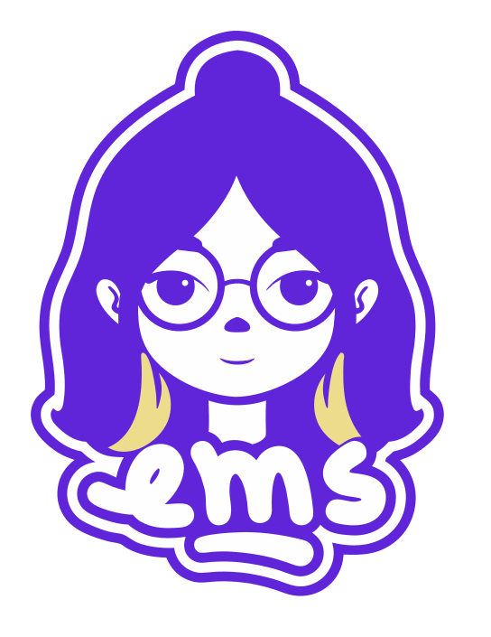
"faço marca bonita de perto e clara de longe"
Este PDF é para pessoas: mostra cada regra com exemplo. Junto dele vai um pacote em texto que outra IA (Claude ou outra) lê direto, sem interpretar imagem. As duas partes dizem a mesma coisa.
Este PDF. Bom para aprovar, apresentar à Emilly e consultar.
DESIGN-SYSTEM.md + tokens.json + pasta assets/. É o que ele deve ler antes de criar qualquer coisa da marca.
src/styles/tokens.css é a fonte da verdade. Mudou lá, atualize o pacote.
| Arquivo | O que é |
|---|---|
README.md | Como usar o pacote e como passar para outro computador ou outro Claude (com o texto pronto para colar). |
DESIGN-SYSTEM.md | Todas as regras em texto: marca, voz, cores, contraste, tipografia, espaço, componentes, carrossel, movimento, imagem, acessibilidade. |
tokens.json | Valores exatos em formato W3C Design Tokens: cores, fontes, escalas, raios, sombras, curvas, pontos de quebra, parâmetros do carrossel. |
assets/selo-ems.svg | Selo original da Emilly (não redesenhar). |
assets/icones/*.svg, assets/icons-sprite.svg | 15 ícones e ilustrações, soltos e em sprite. |
EMS-Design-System.pdf | Este documento. Refazer com python docs/design-system/pdf/gerar_pdf.py. |
EMS é a marca pessoal de Emilly Silva (@itsemsdesign), designer gráfica e UX/UI em Belo Horizonte. O site existe para trazer clientes: um portfólio claro e fácil de usar, com a personalidade das artes dela.
"Blanding": marca limpa demais, igual a todas. Minimalismo sem personalidade.
Estilo: pixel.melbourne (carrossel 3D, hero, etiquetas). Usabilidade: portfólio direto: ver projetos e falar com ela em até 2 cliques.
Conceitual, mas usável: nunca trocar o que funciona por algo só subjetivo.
Primeira pessoa, próxima e direta. Frases curtas. Português do Brasil informal na medida ("pra", "a gente"). Uma palavra de destaque por título, em serif itálico. Objetivo antes de emotivo.
| Use | Evite |
|---|---|
| ✓ Faço marca bonita de perto e clara de longe. | ✗ Transformo sonhos em marcas incríveis ✨ |
| ✓ Me conta sobre a sua marca. Eu respondo rapidinho. | ✗ Entre em contato conosco para mais informações. |
| ✓ Marca boa é a que as pessoas reconhecem. | ✗ Frases emotivas em tamanho gigante (reprovado em 29/09) |
| ✓ Botão com verbo + objeto: "Ver projetos", "Quero uma marca" | ✗ "Clique aqui", "Saiba mais" |
| ✓ Trabalhos que têm cara | ✗ Duas palavras em itálico no mesmo título |
É a arte da própria Emilly. Nunca redesenhar, "melhorar", recolorir, trocar partes, deformar, contornar de novo ou baixar a opacidade. Uma versão redesenhada foi reprovada em 29/09.
| Especificação | |
|---|---|
| Arquivo | assets/selo-ems.svg (544 × 705) |
| Cores do arquivo | #6125D9 · #FEFEFE · #ECDC8C |
| Borda | Já vem com contorno de adesivo (branco + violeta): vale sobre qualquer fundo da paleta. |
| Tamanho mínimo | 28 px de largura (cabeçalho e ícone da aba: 30–34 px). |
| Área de proteção | 25% da largura do selo livre em volta. |
| Inclinado | Só no hero, carimbado sobre o "S", a 12°, sombra drop-shadow(0 18px 24px rgba(42,20,51,.45)). No resto, reto. |
| Movimento | Inclina em 3D seguindo o cursor (até 9° / 7°), aceno de −8° no clique, entra com escala 0 → 1. Nunca gira em loop nem deforma. |
Anton CAIXA ALTA, uma letra por caixa: E e S em #6E36E6, M em #5A1FCB, texto marfim.
Tamanho clamp(7rem, 21vw, 21rem) (celular: 30vw), line-height .82, espaço .06em.
As caixas "respiram" em loop: sobem 6% e giram −2° / 2° / −1,5°, .9 s, uma após a outra.
Onze cores, todas como variáveis CSS em src/styles/tokens.css. Violeta e ameixa dominam; marfim é o respiro; rosa e manteiga são acento.
Rosa e manteiga: no máximo 1 ou 2 elementos por tela. Vinho e lavanda aparecem em faixas, cartões e ilustrações.
#6E36E6 | Caixas E e S do logo do hero | #5A1FCB | Caixa M do logo do hero |
#2F1535 | Vagas "próximo projeto" do carrossel | #7CF29C | Ponto "Disponível para projetos" |
Razão WCAG 2.1 de cada par usado no site. Texto comum pede 4,5:1; texto grande (24 px, ou 18,7 px em negrito) pede 3:1.
| Amostra | Texto sobre fundo | Razão | Uso permitido |
|---|
Três famílias, servidas pelo próprio site (@fontsource, sem Google Fonts). Todas têm acento (é, ã, ç).
line-height .9–.98, letter-spacing -.01em.letter-spacing -.02em, 1,08 a 1,12 vez o título ao lado.line-height 1.55.| Token | Valor | Onde |
|---|---|---|
hero (título) | clamp(2.6rem, 6.6vw, 7rem) · celular 10.5vw | "Faço marca bonita / de perto e clara / de longe." |
--t-h2 | clamp(2.4rem, 6vw, 5.2rem) | títulos de seção |
--t-h3 | clamp(1.6rem, 2.6vw, 2.2rem) | título de cartão de serviço |
--t-lead | clamp(1.05rem, 1.3vw, 1.25rem) | parágrafo de abertura, Sobre |
--t-body | 1rem (16 px) | texto |
--t-small | .875rem (14 px) | eyebrow, botão pequeno, chips |
| eyebrow | 14 px · 600 · .08em · CAIXA ALTA · opacidade .7 | "(01) Projetos selecionados" |
| nome no carrossel | Anton 8vw (≤991: 16vw; ≤479: 14vw) | igual à Pixel |
Anton CAIXA ALTA + uma palavra em serif itálico. Em fundo claro a palavra é rosa; em fundo escuro, manteiga.
Tudo fluido entre celular e desktop por clamp(). Grupos sempre com flex/grid e gap, nunca margem solta.
| Token | Valor | Uso |
|---|---|---|
--gutter | clamp(16px, 4vw, 56px) | margem lateral da página |
--section | clamp(88px, 12vw, 180px) | respiro em cima e embaixo de cada seção |
--max | 1320px | largura máxima do conteúdo, centralizado |
| gaps | 8 · 12 · 16–18 px | entre chips · entre botões · entre cartões |
--r-s--r-m--r-l6px 6px 0 inkNunca sombra preta (rgba(0,0,0,…)): sempre na cor tinta.
| Largura | O que muda |
|---|---|
| ≥ 1000 px | Com mouse, o cartão de serviço sob o cursor cresce. |
| ≤ 991 px | Carrossel: card 70vw, espaço 40vw, proporção 120%, nome 16vw. |
| ≤ 860 px | Links do topo viram botão "Menu +" com menu em tela cheia; hero e Sobre em 1 coluna. |
| ≤ 560 px | Botões na largura toda; processo em 1 coluna; esconde XOXO e brilhos do hero. |
| ≤ 479 px | Carrossel: proporção 140%, nome 14vw, categoria 15 px. |
Nunca rolagem lateral: o que é inclinado e passa da tela (faixas) fica num container com overflow-x: clip.
Desenhados para o site a partir do universo do Behance "EMS Personal Brand" e do Instagram dela. Herdam a cor por currentColor; mínimo 16 px. Uso no site: <svg><use href="#i-espiral"/></svg>.
| Elemento | Amostra | Regra |
|---|---|---|
| Grão de papel | Ruído fractal em tela cheia, 7% de opacidade, por cima de tudo (body::after). Na amostra, exagerado para aparecer no papel. | |
| Estrela em retícula | Pontos de 7 px que somem do centro para a borda. Fundo do hero e do manifesto, com parallax. | |
| Moldura de seleção | Borda 1,5 px violeta + 4 alças de 11 px nos cantos. Foto do Sobre. | |
| Etiqueta @ | @itsemsdesign | Assinatura das artes dela: cursor encostado no canto de uma etiqueta rosa ou violeta. |
.btnPílula, altura 52 px (pequeno 42, grande 60), padding 0 1.5em, borda 2 px, Inter 600. --ivory = ação principal sobre violeta; --ghost = secundária. Hover: sobe 3 px + sombra 0 6px 0, mola --ease-back .35 s. Celular: largura toda.--ink, --small, --bigTinta com texto marfim: CTA do cabeçalho (pequeno) e ações sobre fundo claro..round-btn 56 px manteiga, borda e sombra dura tinta. Seta .c3d__arrow 67 × 32 px (toque 74 × 44), 12 px entre elas; desativada = opacidade .4 + aria-disabled.#7CF29C de 8 px pulsando a cada 2 s..tag12,8 px 600, padding .3em .7em .3em .45em, raio 4, cursor de 18 px fora do canto. Rosa ou violeta..06em, raio 6, sombra dura 3px 3px 0, inclinadas +8° / −7°. Arrastáveis, pulam na entrada.Logo, paleta, tipografia e padrões.
Sites e interfaces fáceis de usar.
Posts, carrosséis e campanhas.
Raio 32, padding clamp(24px, 3vw, 40px), ícone 64 px, título Anton + palavra serif, entregas em pílulas, link "Quero … →". Com mouse (≥ 1000 px) o cartão sob o cursor cresce (flex 1,6; os outros 0,8; .7 s). ≤ 1000 px: empilhados.
Borda 2 px tinta, raio 20, sombra dura 6 px, número em círculo de 52 px, título serif 2rem. Desktop em escada (36 px por degrau); hover sobe na diagonal.
Vem do post dela. Abas acessíveis (setas do teclado), aba ativa rosa, chips marfim com emoji (único lugar com emoji).
Alternativa ao carrossel ("Carrossel | Lista"). Hover abre a linha e mostra uma miniatura de 320 px que segue o mouse.
A mesma lógica da pixel.melbourne, conferida medida a medida: os cards formam um cilindro e a rolagem da página gira o cilindro.
| Parâmetros | |
|---|---|
| Posição de cada card | rotateY(360°/posições × i) translateZ(R) |
| Raio | R = largura / (2·tan(180°/posições)) + espaço; perspectiva = R; lista recua −R |
| Largura / espaço | 50vw / 30vw (≤ 991 px: 70vw / 40vw) |
| Proporção | 60% (≤ 991: 120%; ≤ 479: 140%) |
| Giro | ScrollTrigger scrub: --c3d-rotate de 0 a −passo × (projetos − 1), até o topo do último painel |
| Painéis | 1 por projeto, 100svh, com contador, nome Anton 8vw, categoria e "ver case" |
| Posições mínimas | 8 (vazias = vagas "próximo projeto"); a partir do 9º projeto o anel cresce |
| Frente e verso | cada card tem as duas faces; o outro lado do anel aparece nos vãos, sem espelhar |
| Setas e teclado | setas rolam ao painel vizinho (.6 s); Tab no painel gira o anel até ele |
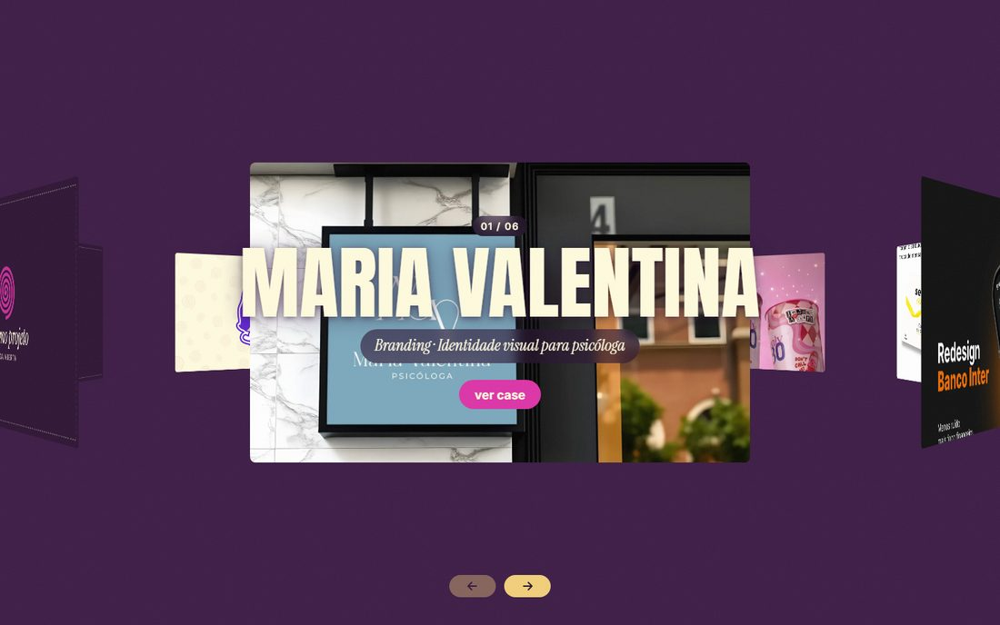
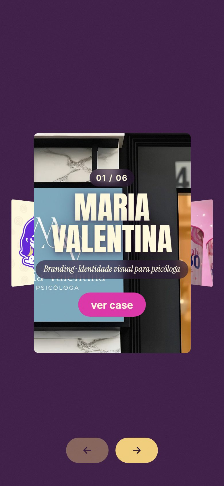
1. Capa 1600 × 1000: python scripts/nova-capa.py <imagem> <slug> (assunto no centro: no celular o card vira retrato). 2. Copiar um bloco em src/data/projects.js (slug, título, categoria, detalhe, ano, link). Pronto: entra no carrossel e na lista.
GSAP + ScrollTrigger + Lenis (rolagem suave, lerp .1). Uma entrada orquestrada no topo; no resto, movimento que ajuda a ler.
| Duração | Valor | Uso |
|---|---|---|
| rápido | 250 ms | hover de cor, cursor |
| base | 350 ms | botões, etiquetas |
| lento | 700 ms | cartões de serviço, menu |
| entrada | 900 ms | linhas do hero, cortinas da abertura |
back.out(3)) → base do hero sobe. Depois: logo respira em loop, adesivos flutuam (±12 px, 2,2–3,1 s), brilhos piscam (2,4 s).prefers-reduced-motion): sem abertura, sem Lenis, sem entradas, faixas paradas. Tudo já aparece no lugar.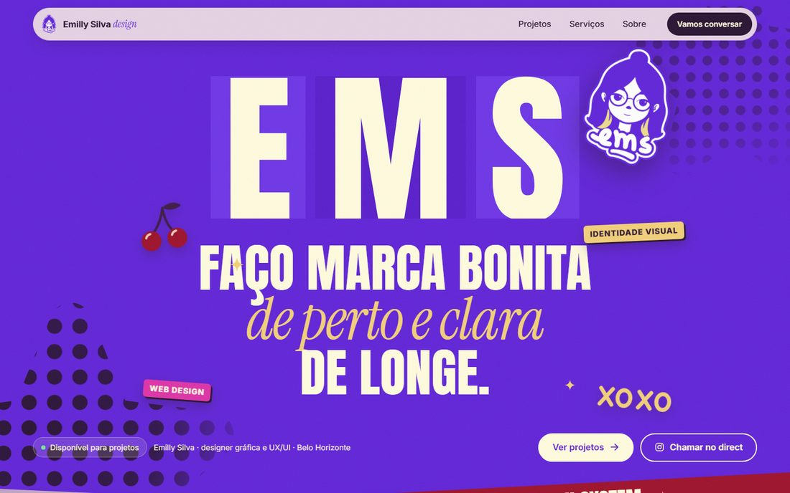
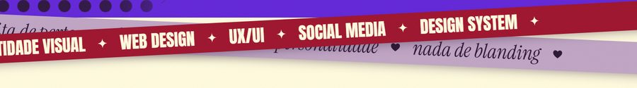
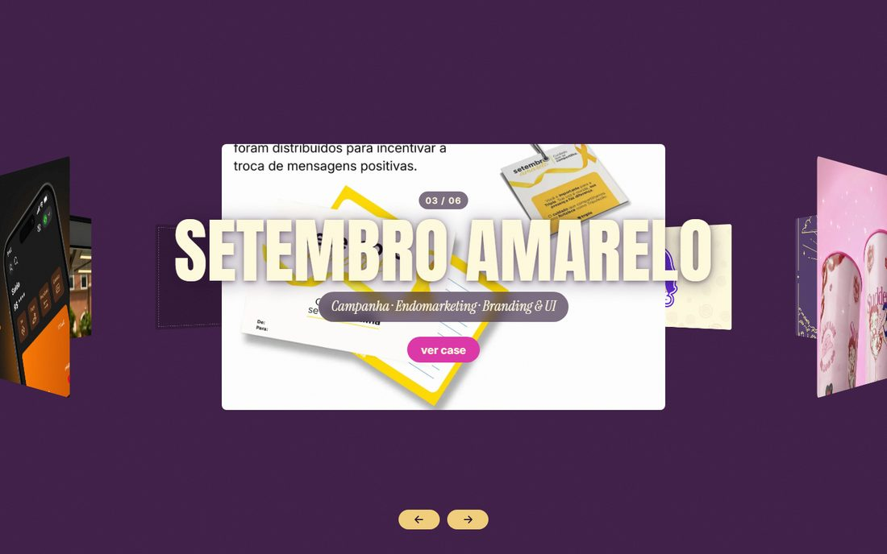
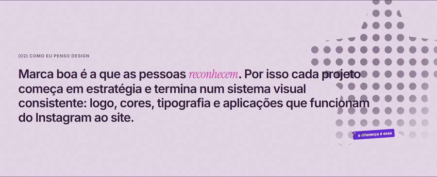
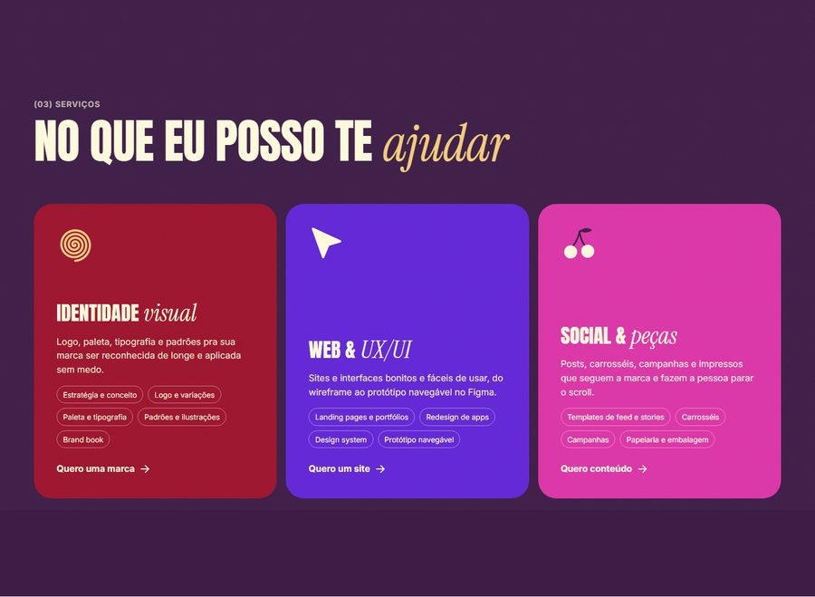
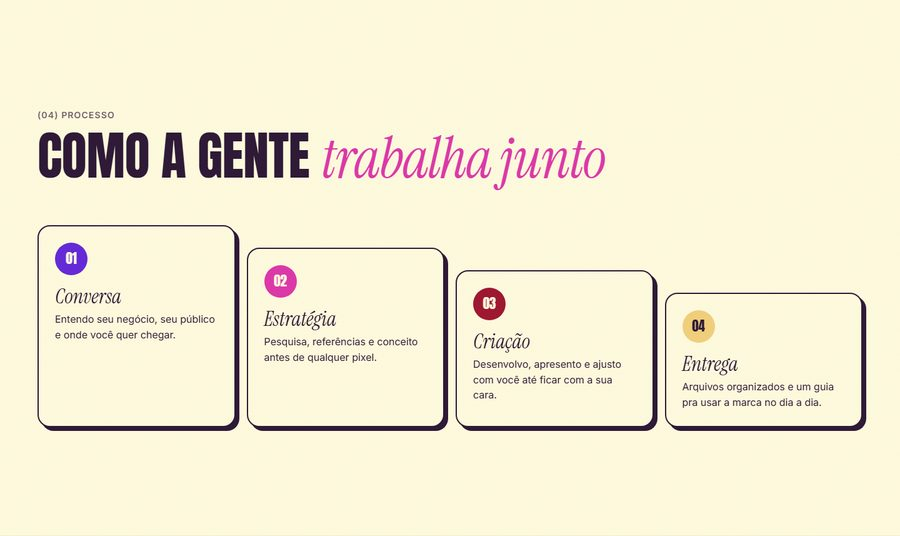
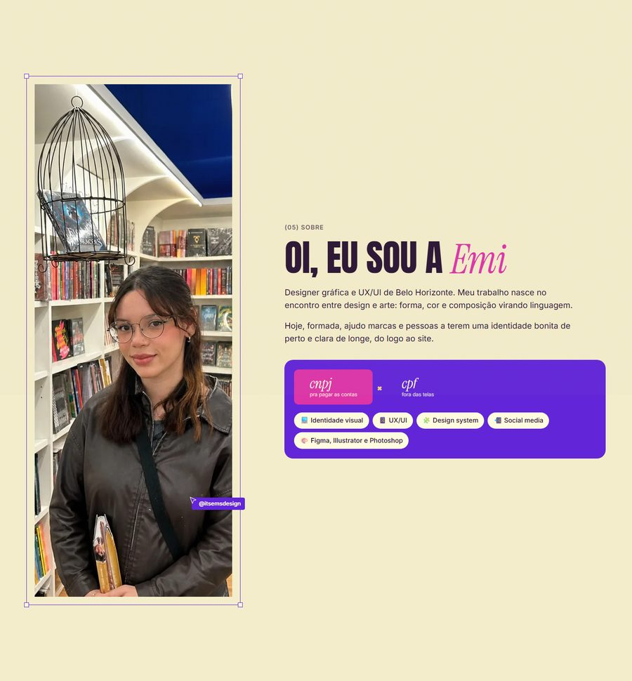
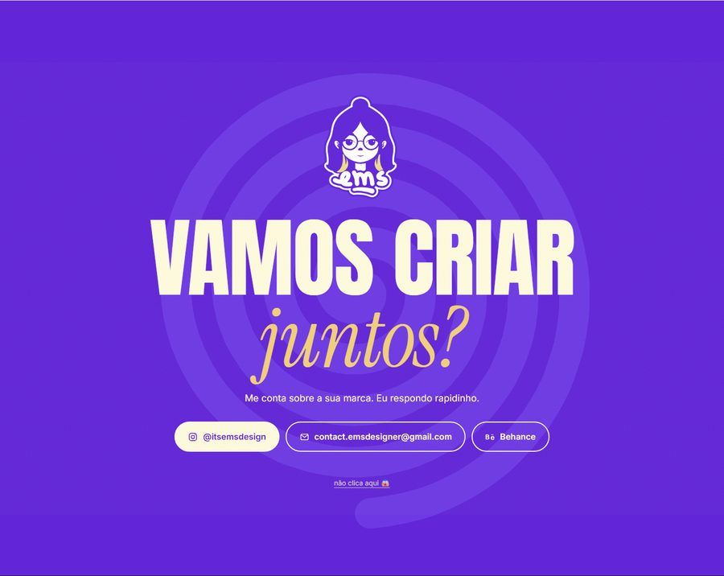
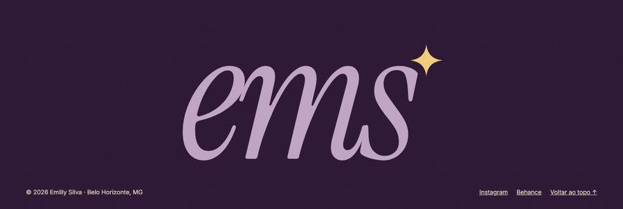
01 Abertura (marfim + cortinas violeta e vinho) vem antes do hero, só na 1ª visita.
A alternância claro/escuro guia a leitura: nunca duas seções seguidas com o mesmo fundo claro.
| Capa de projeto | 1600 × 1000, WebP 80, assunto no centro |
| Slides de case | 1600 px de largura, fatias de até 2000 px, WebP 78 |
| Fotos da Emilly | recorte com fundo transparente (WebP 85) ou foto real; nunca foto pessoal de terceiros |
| Texto alternativo | obrigatório em imagem de conteúdo; decorativa = alt="" |
| Fontes | Behance (behance.net/emysilva7) e pasta EMI; scripts/prepare-images.py |
outline: 3px solid var(--pink), afastado 3 px.<button>, link é <a>; setas e abas com aria-*; cards 3D são aria-hidden e o conteúdo real fica nos painéis.prefers-reduced-motion respeitado.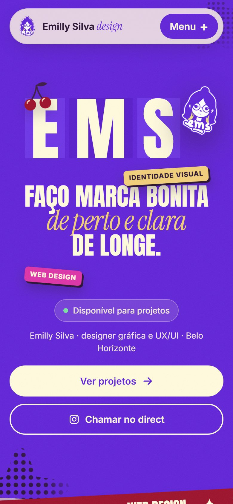
390 px: logo EMS a 30vw, frase a 10.5vw, etiquetas acima e abaixo da frase, botões na largura toda, menu em tela cheia.
| Faça | Não faça |
|---|---|
| ✓ Selo original, reto (inclinado só no hero) | ✗ Redesenhar, recolorir ou deformar o selo |
| ✓ Título: Anton CAIXA ALTA + uma palavra em serif itálico | ✗ Duas palavras em itálico no mesmo título |
| ✓ Rosa e manteiga como acento | ✗ Rosa em texto pequeno ou como fundo de parágrafo |
| ✓ Sombra dura tinta, estilo adesivo | ✗ Sombra preta desfocada |
| ✓ Retícula e grão sutis | ✗ Degradês chamativos |
| ✓ Copy curta e objetiva | ✗ Frases emotivas gigantes |
| ✓ Texto sobre violeta em marfim ou manteiga | ✗ Texto lavanda sobre violeta |
src/styles/tokens.css | cores, fontes, escalas (fonte da verdade) |
src/styles/components.css | botões, chips, etiquetas, moldura, cursor |
src/styles/sections.css | hero, faixas, carrossel, serviços, processo, sobre, contato |
partials/icons.html | sprite de ícones e ilustrações |
src/data/projects.js | projetos do carrossel e da lista |
src/js/modules/carousel.js | carrossel 3D |
docs/referencia-pixel.md | como a Pixel faz o carrossel e o hero |
1. Pelo GitHub (melhor): o pacote está em docs/design-system/ dentro do repositório do site. No outro PC, baixe o repositório e diga ao Claude: "Leia docs/design-system/README.md e DESIGN-SYSTEM.md e siga esse design system em tudo."
2. Sem GitHub: envie o arquivo EMS-design-system.zip (Drive, WhatsApp, e-mail), descompacte e aponte o Claude para a pasta. No claude.ai, anexe DESIGN-SYSTEM.md e tokens.json ao Projeto (conhecimento do projeto).
Este PDF serve para pessoas. Para IA, o que vale é o Markdown + JSON: texto exato, sem precisar interpretar imagem.
ALMAH entra no portfólio? · WhatsApp e formação da Emilly para o Sobre · contraste do texto pequeno sobre rosa (página 6).